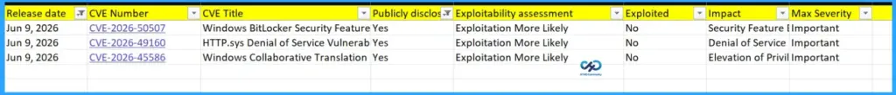
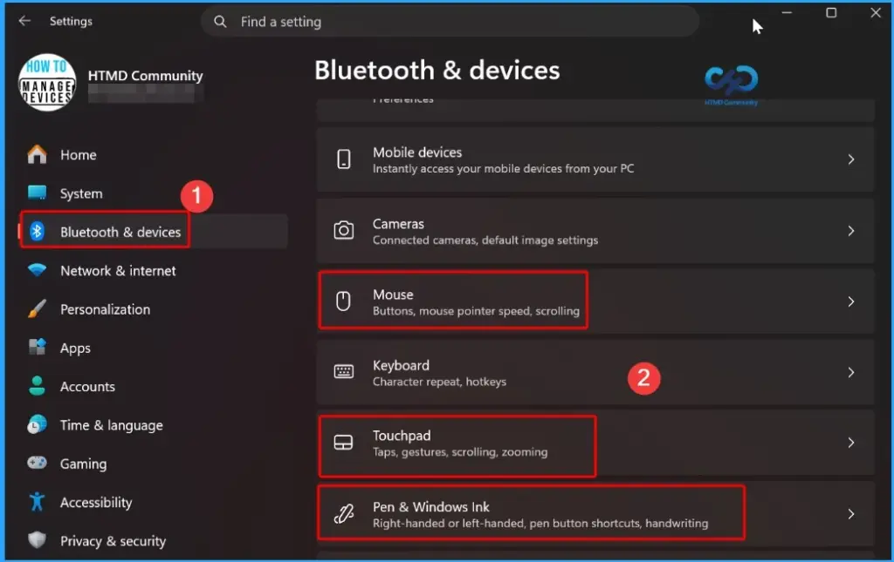
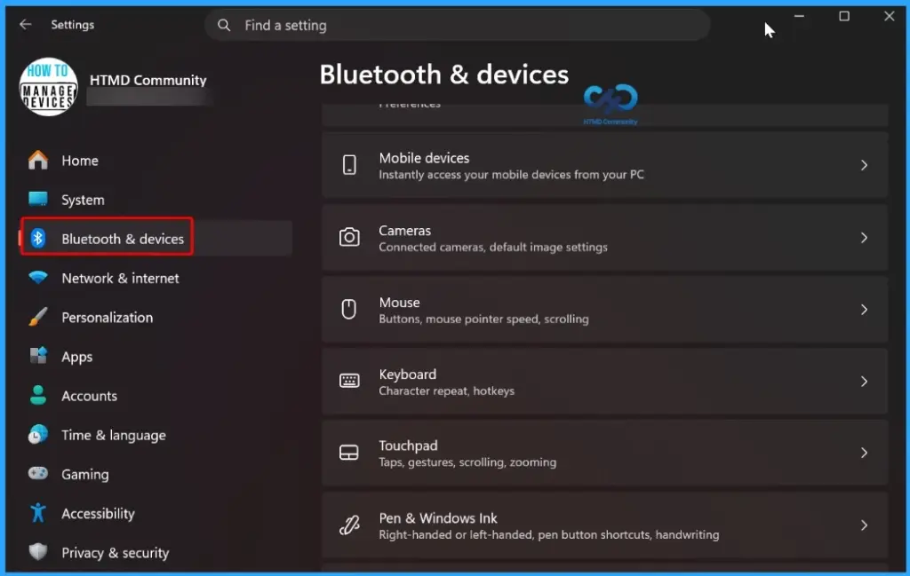
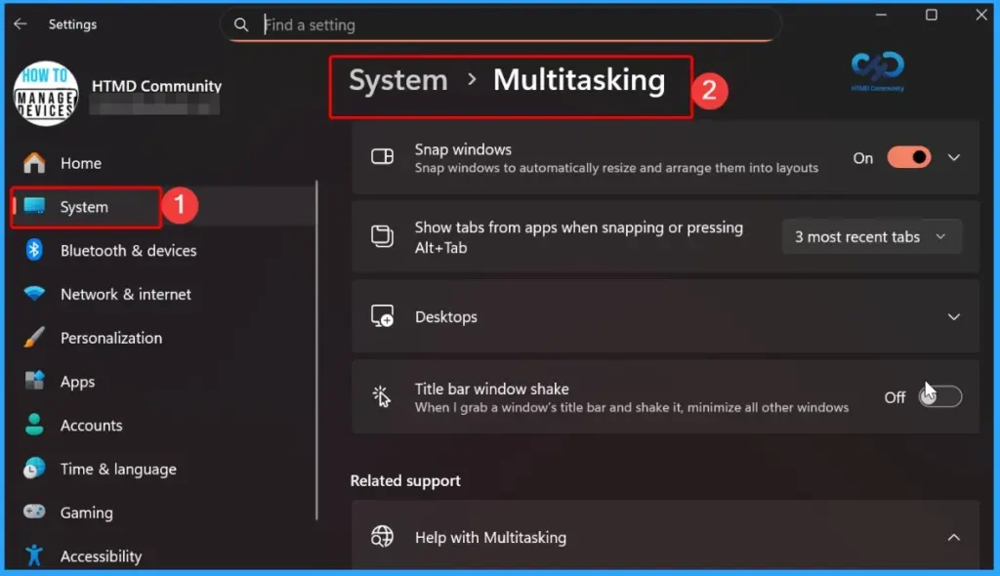
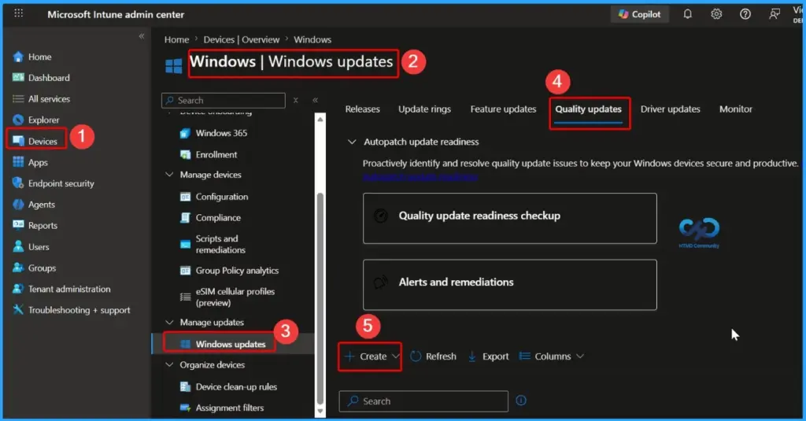
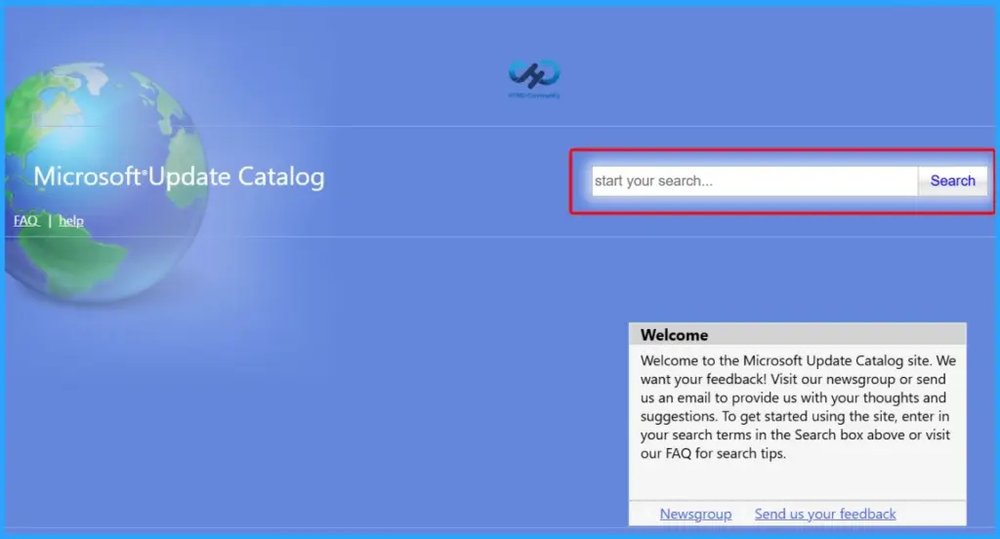

Key Takeaways
- The June 2026 Windows 11 KB5094126 KB5093998 cumulative update includes important security fixes, performance enhancements, and reliability improvements.
- Three Publicly Disclosed Vulnerabilities: Microsoft identified three publicly disclosed vulnerabilities in the June 2026 Patch Tuesday release.
- The vulnerabilities impact Windows BitLocker, HTTP.sys, and the Windows Collaborative Translation Framework (CTFMON).
- No Active Exploitation Reported: None of the vulnerabilities was known to be actively exploited at the time of release.
- Shared Audio lets two users listen to the same PC audio using Bluetooth LE Audio devices.
- Magnifier Improvements: Better accessibility with enhanced screen reader support, protected content magnification, and smoother lens mode navigation.
- File Explorer now supports additional archive formats, including NUPKG, XAR, CPIO, and UU.
- Reliability Improvements enhance File Explorer performance, dark mode visuals, and folder view consistency.
2026 June KB5094126 KB5093998 Windows 11 Patch | 3 Zero Day Vulnerabilities and 200 Flaws! The June 2026 Windows 11 Patch Tuesday update brings several improvements to File Explorer. It adds support for additional archive formats, including UU, CPIO, XAR, and NuGet Packages (NUPKG). The update also preserves View and Sort preferences in folders such as Downloads and Documents, fixes a white flash issue in dark mode, and improves explorer.exe reliability to ensure File Explorer processes close properly when Windows are closed.
Table of Content
The June 2026 Patch Tuesday release includes three publicly disclosed vulnerabilities. These vulnerabilities affect Windows BitLocker, HTTP.sys, and the Windows Collaborative Translation Framework (CTFMON). Although none of them was known to be actively exploited at the time of release, Microsoft has assessed all three as “Exploitation More Likely.” Organisations should prioritise the June 2026 security updates to reduce potential security risks and maintain system protection.
- 27 Spoofing Vulnerabilities
- 19 Security Feature Bypass Vulnerabilities
- 7 Denial of Service Vulnerabilities
- 3 Tampering Vulnerabilities
- 65 Elevation of Privilege Vulnerabilities
- 54 Remote Code Execution Vulnerabilities
- 26 Information Disclosure Vulnerabilities
| Release Date | CVE Number | CVE Title | Publicly disclosed | Exploitability assessment | Exploited |
|---|---|---|---|---|---|
| Jun 9, 2026 | CVE-2026-50507 | Windows BitLocker Security Feature Bypass Vulnerability | Yes | Exploitation More Likely | No |
| Jun 9, 2026 | CVE-2026-49160 | HTTP.sys Denial of Service Vulnerability | Yes | Exploitation More Likely | No |
| Jun 9, 2026 | CVE-2026-45586 | Windows Collaborative Translation Framework (CTFMON) Elevation of Privilege Vulnerability | Yes | Exploitation More Likely | No |

2026 June KB5094126 KB5093998 Windows 11 Patch | 3 Zero Day Vulnerabilities and 200 Flaws
The June Patch Tuesday update introduces enhanced haptic feedback support for compatible devices. Users can now experience tactile feedback when performing actions such as aligning objects in PowerPoint, snapping windows, or resizing applications.
- These haptic signals can be turned on or off in Settings > Bluetooth & devices > Mouse, Touchpad, or Pen > Haptic signals.
| Windows 11 26H1 | Windows 11 25H2 and 24H2 | Windows 11 23H2 |
|---|---|---|
| KB5095051 | KB5094126 | KB5093998 |

Updated Version of Windows 11 after Installing KB5094126 KB5093998 June 2026 Patch
This Patch Tuesday update improves the reliability of custom tool configuration for wheel devices. Users who customise wheel actions through Settings > Bluetooth & Devices > Wheel should experience more consistent behavior and improved stability when managing and using their preferred tool settings.
- Windows 11 version 25h2 and 24h2 – June 9, 2026—KB5094126 (OS Builds 26200.8655 and 26100.8655)
- More Details on Windows 11 version Numbers: Windows 11 Version Numbers Build Numbers Major Minor Build Rev.
- Windows 11 Version 23h2 – June 9, 2026—KB5093998 (OS Build 22631.7219)
- Windows 11 Version 26h1 – June 9, 2026—KB5095051 (OS Build 28000.2269)

Windows 11 Features and New Improvements – KB5094126 KB5093998
The patch introduces improvements to the sharing experience. Drag Tray has been renamed to Drop Tray, and its settings have been moved to Settings > System > Multitasking. Microsoft has also redesigned the feature with a smaller peek view, reducing accidental activations and making it easier to dismiss when working near the top of the screen.
| New Improvement | Details |
|---|---|
| Shared Audio in Windows 11 | With this feature, Microsoft enables two people to listen to the same audio from a single Windows 11 PC at the same time |
| Xbox in Windows 11 PCs | Xbox mode is available on Windows 11 PCs. It provides Full‑screen, console‑like gaming interface for Windows PCs. |
| Expanded Achieved Format in File Explorer | With this feature, users can expands the list of archive formats that can be used in File Explorer to include uu, cpio, xar, and NuGet Packages (nupkg). |
| View and Sort preferences in File Explorer | With this update, When apps open File Explorer directly into folders like Downloads or Documents, Windows will now remember how you last set up the view and sort order. |
| Removed White Flash in File Explorer | Microsoft removed White flash in file explorer that ould appear when opening This PC or while resizing the Details pane in dark mode |
| Improved Explorer Reliability | Improves the reliability of relevant explorer.exe processes so they stop after closing File Explorer windows. |
| Haptic feedback effects on compatible input devices | Haptic feedback effects on compatible input devices. It is effects on certain actions, such as aligning objects in PowerPoint, snapping or resizing windows |
| Simplified Voice Typing UI | Voice typing on the touch keyboard now looks simpler and more intuitive |
| Arabic 101 Legacy keyboard layout is now available | Microsoft introduced Arabic 101 Legacy keyboard layout. |
| Improved Reliabilty of settings custom tool | Microsoft improved the reliabilty of settings Customtool |
| Improves the persistence of Fluid Dictation setting | Microsoft improves the persistence of Fluid Dictation setting in voice typing with this update. |
| Keyboard navigation for emoji panels | The reliability of keyboard navigation for emoji panels |
| Improved ADLaM keyboard | Microsoft improved the reliability of ADLaM keyboard |
| Drop Tray Enhancements | The updated Drop Tray now uses a smaller peek view to reduce accidental openings and make it easier to dismiss when working near the top of the screen. |
| Introducing Agents on Taskbar | Windows now provides a new taskbar experience to monitor agents from first- and third-party apps. |
| Enterprise State Roaming (ESR) | ESR can now be managed through Windows Backup for Organizations policies, simplifying setup for IT administrators. |
| Policy-Based Removal of Preinstalled Microsoft Apps | Windows Enterprise and Education now support a dynamic app removal list for the “Remove Default Microsoft Store packages” policy, allowing admins to remove additional MSIX/APPX apps using Group Policy or custom OMA-URI. |
| Printing Improvements | With this update a new icon now indicates when a printer supports Windows Protected Print Mode in print settings. |
| Windows Driver Policy Update | Windows security is improved by changing how the kernel trusts third-party drivers. |
| Enhanced Security for Batch Files | With this update, admins can enable a secure processing mode for batch files and CMD scripts to prevent changes during execution using the LockBatchFilesWhenInUse registry setting or Application Control for Business policy. |
| Microsoft Store Reliability | Reduces unexpected Microsoft Store download and installation errors, including 0x80070057, 0x80240008, and 0x80073d28. |
| Font Improvements | Enhancements to the Leelawadee UI font family improve glyph sequencing, positioning, and rendering for Thai, Lao, Khmer, and Lontara scripts. |
| Audio Improvements | Improves third-party driver compatibility with midisrv.exe. |
| Taskbar Reliability | Improves reliability when loading the taskbar system tray area. |
| Windows Hello Improvements | Enhances reliability of Windows Hello Face and improves persistence of Windows Hello Fingerprint across upgrades. |
| Delivery Optimization | Improves memory usage to reduce the likelihood of excessive memory consumption. |
| Display and Graphics | Improves persistence and availability of color profile options for supported monitors. |
| Kiosk Mode Improvements | This update, simplifies configuration of allowed packaged apps in kiosk mode when Microsoft Edge is included. |
| General Performance Improvements | Improves startup app launch performance after device boot. |
| General Reliability Improvements | Microsoft introduces underlying changes to improve explorer.exe reliability during sign-in, taskbar interactions, Task View usage, Quick Access actions, and more. |
| Storage Improvements | This update improves performance when viewing large storage volumes and increases FAT32 command-line formatting limit from 32GB to 2TB. |

Intune Windows 11 KB5094126 KB5093998 Deployment
You can deploy the June 2026 Windows 11 quality updates through Microsoft Intune. Sign in to the Intune admin center, go to Devices > Windows > Windows Updates > Quality Updates, and create a new update profile. This allows IT administrators to quickly deploy the latest June 2026 security fixes and improvements to managed devices.
Read More – Software Update Patching Options with Intune Setup Guide
More Details on Zero Day Out Of Band Patch Deployment Using Intune MEM Expedite Best Option and Intune Reporting Issue: Expedite Windows Security Patch Deployment.

SCCM Windows 11 KB5094126 KB5093998 Deployment
You can deploy the June 2026 Windows 11 cumulative updates using SCCM, WSUS, or Microsoft Intune. In SCCM, synchronize software updates, locate the June 2026 cumulative update, and deploy it to the required device collections.
- Deployment Steps:
- Open SCCM Console.
- Navigate to Software Library > Software Updates > All Software Updates.
- Select Synchronize Software Updates.
- Search for the June 2026 Windows 11 Cumulative Update using the KB number.
- Select the update and deploy it to the required device collections.
- Monitor the deployment status and installation progress.
Direct Download Links of Windows 11 KB5094126 KB5093998
You can manually download the June 2026 Windows 11 cumulative updates from the Microsoft Update Catalog. Simply search for the relevant June 2026 KB number, download the package that matches your device architecture, and install it manually.
Direct Download Links – Microsoft Update Catalog
| Cumulative Update for Windows 11 | Products | Size | Direct Download |
|---|---|---|---|
| 2026-01 Cumulative Update for Windows 11, version 25H2 for x64-based Systems(KB5094126) | Windows 11 25H2 | 5383.7 MB | Download |
| 2026-01 Cumulative Update for Windows 11 Version 24H2 for x64-based Systems (KB5094126) | Windows 11 24H2 | 5383.7 MB | Download |
| 2026-01 Cumulative Update for Windows 11 Version 23H2 for x64-based Systems (KB5093998) | Windows 11 23H2 | 1050.5 MB | Download |

Resources
June 9, 2026—KB5094126 (OS Builds 26200.8655 and 26100.8655) – Microsoft Support
Need Further Assistance or Have Technical Questions?
Join the LinkedIn Page and Telegram group to get the latest step-by-step guides and news updates. Join our Meetup Page to participate in User group meetings. Also, join the WhatsApp Community and the Whatsapp channel to get the latest news on Microsoft Technologies. We are there on Reddit as well.
Author
Anoop C Nair is a Workplace Technology solution architect with 25+ years of experience. Microsoft Certified Trainer. Microsoft MVP from 2015 onwards for consecutive 11+ years! He is a blogger, Speaker, and Founder of HTMD Community and HTMD Conference. His main focus is on Device Management technologies like Intune, Windows, and Cloud PC. He writes about technologies like Intune, SCCM, Windows, Cloud PC, Entra, and Microsoft Security.